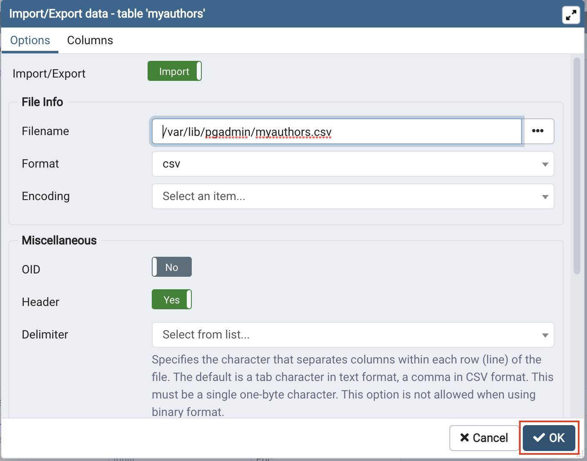

Next, open the pgAdmin Graphical User Interface by clicking the "pgAdmin" button in the Cloud IDE interface.


Estimated time needed: 20 minutes
In this lab, you will learn how to create tables and load data in the PostgreSQL database service using the pgAdmin graphical user interface (GUI) tool. The pgAdmin GUI provides an alternative to the command line for interacting with a PostgreSQL database using a graphical interface. This provides a number of key features for interacting with a PostgreSQL database in an easy to use format.
In this lab, you will use PostgreSQL Database. PostgreSQL is a Relational Database Management System (RDBMS) designed to efficiently store, manipulate, and retrieve data.

To complete this lab you will utilize the PostgreSQL relational database service available as part of IBM Skills Network Labs (SN Labs) Cloud IDE. SN Labs is a virtual lab environment used in this course.
Books database has been used in this lab.
The following diagram shows the structure of the myauthors table from the Books database:
After completing this lab, you will be able to use pgAdmin with PostgreSQL to:
Create databases and tables in a PostgreSQL instance
Load data into tables manually using the pgAdmin GUI
Load data into tables from a text/script file
In this lab, you will complete several tasks in which you will learn how to create tables and load data in the PostgreSQL database service using the pgAdmin graphical user interface (GUI) tool.
First, to create a database on a PostgreSQL server instance, you'll first want to actually launch a PostgreSQL server instance on Cloud IDE and open up the pgAdmin Graphical User Interface.
Click on the "Start" button. PostgreSQL may take a few moments to start.
Next, open the pgAdmin Graphical User Interface by clicking the "pgAdmin" button in the Cloud IDE interface.
Once the pgAdmin GUI opens, click on the Servers tab on the left side of the page. You will be prompted to enter a password.

Click on the Copy icon to the left of your password to copy the session password onto your clipboard.

OKYou will then be able to access the pgAdmin GUI tool.

In the tree-view, expand Servers > postgres > Databases. If prompted, enter your PostgreSQL service session password. Right-click on Databases and go to Create > Database. In the Database box, type Books as the name for your new database, and then click Save. Proceed to Task B.
Now that you have your PostgreSQL service active and have created the Books database using pgAdmin, let's go ahead and create a few tables to populate the database and store the data that we wish to eventually upload into it.
In the tree-view, expand Books > Schemas > public. Right-click on Tables and go to Create > Table.
On the General tab, in the Name box, type myauthors as name of the table. Don't click Save, proceed to the next step.
Switch to tab Columns and click the Add new row button four times to add 4 column placeholders. Don't click Save, proceed to the next step.
Enter the myauthors table definition structure information as shown in the image below in the highlighted boxes. Then click Save. Proceed to Task C.
Great! You now have a database and have created tables within it. With the pgAdmin GUI, you can insert values into the tables manually. This is useful if you have a few new entries you wish to add to the database. Let's see how to do it.
In the tree-view, expand Tables. Right-click on myauthors and go to View/Edit Data > All Rows.
You will insert 2 rows of data into the myauthors table. In the lower Data Output pane, enter myauthors table data information for 2 rows as shown in the highlighted boxes in the image below. Then click the Save Data Changes button. Proceed to Task D.
In the previous task, you entered some data entries into a table manually with pgAdmin. While this method can be useful for small additions, if you wish to upload large amounts of data at once, that process becomes far too tedious. An alternative is to load data into tables from a text or script file containing the data you wish to enter. Let's take a look at how to do this.
Finally, you will import the remainder of the myauthors table data from a csv text file. Download the csv file below to your local computer:
In the tree-view, right-click on myauthors and go to Import/Export.
Follow the instructions below to import:
Make sure Import/Export is set to Import, Format = csv and Header = Yes. Then click on the Select file button by the Filename box.
Click the Upload File button.
Double-click on the drop files area and load the myauthors.csv you downloaded earlier from your local computer storage.
When the upload is complete, close the drop files area clicking the X button.
Select the uploaded myauthors.csv file from the list and click the Select button.
Click OK and notification of import success should appear.


Repeat Task C Step 1 to check that the newly imported data rows appear along with your previously inserted 2 rows.
As you can see, the data contained in the csv file was successfully uploaded into the table and you did not have to manually input hundreds of entries.
| Date | Version | Changed by | Change Description |
|---|---|---|---|
| 2021-03-15 | 1.0 | Sandip Saha Joy | Created initial version |
| 2021-10-18 | 1.1 | David Pasternak | Updated lab instructions |